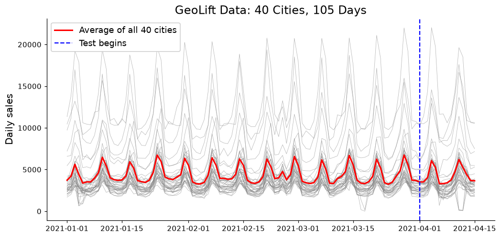
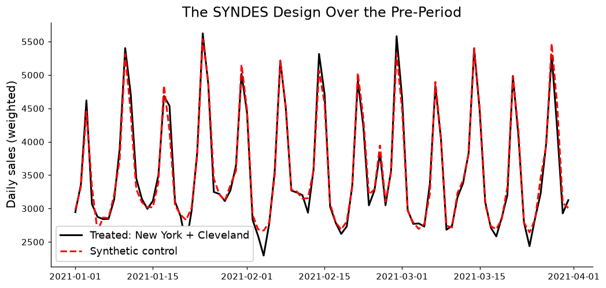
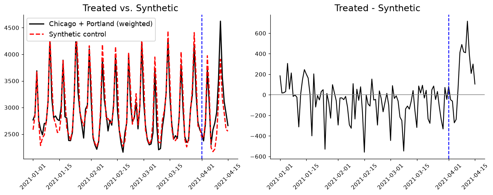

| Panel | Treated | Relaxed bound / (4 lambda / N) | Bound below the optimum |
|---|---|---|---|
| GeoLift (40 units, 90 periods) | 2 | 1 | 81% |
| GeoLift (40 units, 90 periods) | 3 | 1 | 73% |
| GeoLift (40 units, 90 periods) | 5 | 1 | 57% |
| GeoLift (40 units, 90 periods) | 10 | 1 | 26% |
| Walmart (45 units, 128 periods) | 2 | 1 | 84% |
| Walmart (45 units, 128 periods) | 3 | 1 | 76% |
| Walmart (45 units, 128 periods) | 5 | 1 | 61% |
| Walmart (45 units, 128 periods) | 10 | 1 | 32% |
| BLS unemployment (50 units, 40 periods) | 2 | 1 | 86% |
| BLS unemployment (50 units, 40 periods) | 3 | 1 | 79% |
| BLS unemployment (50 units, 40 periods) | 5 | 1 | 67% |
| BLS unemployment (50 units, 40 periods) | 10 | 1 | 39% |
Which Markets Should You Treat? Synthetic Design in mlsynth
Experiments
Causal Inference
Econometrics
Most synthetic control posts on this blog take the treated unit as given. California passed Proposition 99, the Basque Country had terrorism, Barcelona banned new hotels. The policy already happened, somebody else picked where, and our job was to build a counterfactual after the fact. The exception is my post on synthetic controls for marketing experiments, where MAREX decides which Curaçao towns get a green-hotel program before it starts.
This post is about another way to make that choice. In marketing, the after-the-fact framing is often backwards. If you are about to run a geo test (turn on a TV campaign in a few cities, hold the rest out, measure the lift), you get to choose the cities. And the choice matters a lot more than people tend to think. Pick two markets that nothing else in your data looks like, and no amount of clever weighting afterward will give you a good counterfactual. Pick two markets that the rest of the country tracks closely, and a modest lift becomes detectable.
Doudchenko, Khosravi, Pouget-Abadie, Lahaie, Lubin, Mirrokni, Spiess, and Imbens (2021) turn that choice into an optimization problem. Their synthetic design picks the treated markets and the synthetic control weights at the same time, before the experiment runs. mlsynth implements it as the SYNDES class. The catch is computational: the paper solves the design with a general mixed-integer solver, and the authors report that 50 units took hours. I took a different route in mlsynth, and most of this post is about why. I start with the paper’s approach and where it gets stuck, then explain how I chose to solve the problem instead, and then put both to work on the data from Meta’s GeoLift walkthrough.
The Design Problem
As usual, I begin with notation. Let \(j\) index the 40 cities, collected in \(\mathcal{N} \coloneqq \{1, \dots, N\}\), and let \(t\) index days. The pre-period is \(\mathcal{T}_1 \coloneqq \{1, \dots, T_0\}\) (for us, \(T_0 = 90\)), and the test window is \(\mathcal{T}_2 \coloneqq \{T_0 + 1, \dots, T\}\). We observe sales \(y_{jt}\). The new piece is that treatment is now a decision variable: \(D_j \in \{0, 1\}\) says whether we treat city \(j\), and we treat exactly \(K\) of them, \(\sum_{j \in \mathcal{N}} D_j = K\).
What Are We Minimizing?
Suppose sales without treatment are \(y_{jt} = \mu_{jt} + \varepsilon_{jt}\), a signal plus noise with variance \(\sigma^2\). If we compare a weighted average of treated cities to a weighted average of untreated cities, the mean squared error of that comparison splits into two pieces. One is bias: how far apart the two weighted signals \(\mu_{jt}\) are. The other is variance: \(\sigma^2\) times the sum of squared weights, which blows up when a few cities carry all the weight. A good design keeps both small.
The paper gives three versions of this problem. The one I use here is the two-way global design, where one weight vector \(\mathbf{w}\) covers both sides of the comparison:
\[ \begin{aligned} (\mathbf{D}^\ast, \mathbf{w}^\ast) \in \operatorname*{argmin}_{\mathbf{D}, \, \mathbf{w}} \quad & \frac{1}{T_0} \sum_{t \in \mathcal{T}_1} \left( \sum_{j \in \mathcal{N}} w_j D_j y_{jt} - \sum_{j \in \mathcal{N}} w_j (1 - D_j) y_{jt} \right)^2 + \lambda \sum_{j \in \mathcal{N}} w_j^2 \\ \text{s.t.} \quad & w_j \geq 0, \quad \sum_{j \in \mathcal{N}} D_j = K, \quad \sum_{j \in \mathcal{N}} w_j D_j = 1, \quad \sum_{j \in \mathcal{N}} w_j (1 - D_j) = 1. \end{aligned} \]
In English: choose which \(K\) cities to treat, and put simplex weights on the treated side and the untreated side, so that the weighted treated cities and the weighted untreated cities look as alike as possible over the pre-period. The first term is the pre-period stand-in for the bias, and the \(\lambda\) term is the stand-in for \(\sigma^2 \sum_j w_j^2\), the variance. By default mlsynth sets \(\lambda\) to the pre-period sample variance, which is the paper’s suggestion.
Because \(\mathbf{D}\) is binary, we are choosing among \(\binom{N}{K}\) possible treated sets, which is where the computational trouble starts. Before getting to that, though: the effect this design estimates is not the one MAREX estimates.
Which Effect? MAREX Targets the ATE, SYNDES the ATT
Abadie and Zhao, the paper behind MAREX, start from the population. Each unit gets a known weight \(f_j\) (a market’s share of national sales, say, or \(1/N\)), and the target is the average treatment effect over everyone,
\[ \tau_t = \sum_{j \in \mathcal{N}} f_j \left( y_{jt}^{I} - y_{jt}^{N} \right), \]
where \(y_{jt}^{I}\) and \(y_{jt}^{N}\) are city \(j\)’s outcomes with and without treatment. Their base design picks treated weights \(\mathbf{w}\) and control weights \(\mathbf{v}\) so that both synthetic units reproduce the population’s average predictors, \(\sum_j w_j \mathbf{x}_j \approx \sum_j f_j \mathbf{x}_j\) and \(\sum_j v_j \mathbf{x}_j \approx \sum_j f_j \mathbf{x}_j\). The treated group is chosen to look like the country, so the gap between the two synthetic units estimates what the campaign would do if everyone got it. That is the ATE, and it is what MAREX’s default design="standard" solves for.
SYNDES never mentions the population. Its objective only asks the weighted treated cities and the weighted control cities to look like each other, so the effect it estimates is
\[ \tau_t^{T} = \sum_{j \in \mathcal{N}} w_j D_j \left( y_{jt}^{I} - y_{jt}^{N} \right), \]
the average treatment effect on the treated, weighted by the design’s own treated weights. Abadie and Zhao make the same point about Doudchenko et al.: their target “is the treatment effect for a weighted average of treated units that can be closely matched in their pre-treatment outcomes by a weighted average of untreated units.” Read that phrase carefully, because it is the whole trade-off. SYNDES picks the treated cities precisely because they are easy to match. That buys precision, and we will see how much below. But it means the effect is the effect for those cities, and the cities that are easiest to match need not look anything like the country.
If the campaign does roughly the same thing everywhere, the two estimands coincide and nothing is lost. If it does not (it works better in big markets, or in markets with more young customers), a SYNDES estimate tells you about the cities it chose, and you need a separate argument for carrying it to the rest. MAREX makes the opposite trade: it accepts a noisier comparison in exchange for an estimand about the whole population. Abadie and Zhao’s weakly targeted design sits between the two, with a parameter \(\beta\) that moves the target from the ATE toward the ATT as it grows. So the right tool depends on the question. “Did the campaign work where we ran it?” is an ATT question. “What happens if we roll it out nationally?” is an ATE question.
How the Paper Solves It
The two-way problem multiplies a continuous weight \(w_j\) by a binary \(D_j\), so it is not convex. Doudchenko et al. handle the product the textbook way. They introduce an auxiliary variable \(q_j \coloneqq w_j D_j\) and replace the product with linear constraints,
\[ q_j \leq D_j, \qquad q_j \leq w_j, \qquad q_j \geq w_j - (1 - D_j), \qquad q_j \geq 0, \]
which are exact whenever \(D_j\) is 0 or 1. What is left is a mixed-integer program with a convex quadratic objective and linear constraints, and they hand it to SCIP, a general-purpose solver. They also prove the design problem is NP-hard, by a reduction from the partition problem, so no algorithm is going to solve every instance quickly. Their own assessment of the computation (Section 6) is frank: “In our simulations we were able to solve problems for N = 50 units … on a single machine within hours.” Their Monte Carlo study runs on 10-unit panels.
So why does a 50-unit problem take hours? A mixed-integer solver works by branch and bound. It splits the problem on one binary at a time (\(D_j = 0\) in one branch, \(D_j = 1\) in the other), and it can only throw a branch away once it has a lower bound for that branch that already beats the best design found so far. Those lower bounds come from relaxing every \(D_j\) from \(\{0, 1\}\) to the interval \([0, 1]\). The relaxation is where the trouble is, and it is easy to see exactly how bad it is. Set every \(D_j = K/N\), every weight \(w_j = 2/N\), and split each weight evenly between the two sides, \(q_j = 1/N\). All four constraints above hold, the treated weights sum to one, the control weights sum to one, and every city contributes exactly as much to the treated side as to the control side. So the contrast \(\sum_j (2 q_j - w_j) y_{jt}\) is zero in every period, and the fit term vanishes. All that is left is the penalty, and the smallest \(\lambda \sum_j w_j^2\) can be when the weights sum to two is \(4\lambda / N\). The relaxed problem cannot do better than that either, since the fit term is never negative. So the root bound is
\[ p_{\text{relaxed}} = \frac{4\lambda}{N}, \]
on every panel and for every \(K\). It never looks at how well any design fits the data, and it does not know how many cities are treated. Here is that bound against the true optimum on three panels: GeoLift’s pre-test, Walmart’s weekly sales (45 stores, 128 weeks), and the state unemployment data the paper itself uses. The relaxed problem is written out exactly as the paper writes it, solved with a convex solver, and compared with the optimum that SYNDES proves.
The middle column is 1 in every row, as the argument says it must be. The last column is the problem. With two or three treated units, the relaxation’s bound sits 73 to 86 percent below the optimum; with ten, 26 to 39 percent. It gets better as \(K\) grows only because the optimum falls toward it, not because the bound learns anything.
Branching does not rescue it either. Take GeoLift with ten treated cities and follow the optimal design down the tree, fixing its first eight treated cities to 1 and eight other cities to 0. That is 16 of 40 decisions made, and every one of them right. The bound moves from 73.9 percent of the optimum to 74.3 percent. It reaches 100 percent only once all ten treated cities are fixed, because only then is there nothing left to split evenly. So the solver gets no help from its bound until a branch has already pinned down an entire treated set, which is enumeration with extra steps. A bound that weak rules out almost nothing, so the solver keeps splitting.
Here is what that costs on a real problem. I took Walmart’s weekly sales for 45 stores, used the first 128 weeks as the pre-period, and asked for three treated stores. That is only 14,190 possible designs. The exact search in SYNDES returns stores 29, 31 and 40 and proves them optimal in 0.08 seconds. I then gave SCIP the paper’s mixed-integer program, asked it to prove optimality, and stopped it after 20 minutes (1,233 seconds of solving time). In that time it explored 74 nodes of its search tree and did not find a single feasible design, not even a bad one. Its lower bound had reached \(8.5 \times 10^{7}\), against an optimum of \(1.04 \times 10^{10}\): less than one percent of the way. That bound is even weaker than the \(4\lambda/N\) bound above (\(2.5 \times 10^{9}\) here), because SCIP builds its relaxation of the squared objective up from linear pieces as it goes. This is the run, if you want to reproduce it (it takes the full 20 minutes):
import numpy as np
import pandas as pd
from mlsynth.utils.syndes_helpers.optimization import estimate_lambda, solve_synthetic_design
from mlsynth.utils.syndes_helpers.exact import solve_synthetic_design_exact
url = "https://raw.githubusercontent.com/jgreathouse9/mlsynth/refs/heads/main/basedata/walmart_weekly_sales.csv"
Y = pd.read_csv(url).pivot(index="week", columns="store", values="sales").loc[1:128].to_numpy(float)
lam = estimate_lambda(Y)
exact = solve_synthetic_design_exact(Y, 3, lam=lam) # 0.08 seconds, proven optimal
scip = solve_synthetic_design(Y, 3, mode="global_2way", lam=lam, # the paper's MIP on SCIP
solver="SCIP", verbose=True, gap_limit=0.0, time_limit=1200.0)So the paper’s route does not just struggle to prove its answer here. On a 45-unit panel with three treated, it never produces one. In a study in the mlsynth repository (bnb_external), SCIP was given 20 minutes on nine two-way designs, including GeoLift with 6, 8 and 10 treated markets. It stopped at the time limit every time, between 5.3 and 29.4 percent away from closing its own gap, and its design was optimal on two of the nine.
I had the same experience with MAREX, the estimator from that marketing-experiments post. There the linear part of the problem is already as tight as a linear description can be (its constraint matrix is totally unimodular), so the cutting planes a mixed-integer solver relies on have nothing to cut, and the entire gap sits in the quadratic objective.
How I Solve It
Once I saw where the time was going, the question became: what does this problem look like if I stop treating it as a generic mixed-integer program?
Name the Treated Set, and the Hard Part Disappears
Suppose someone hands you the treated set \(\mathcal{S}\). Then the binaries are known, the products \(w_j D_j\) are just \(w_j\) on \(\mathcal{S}\) and zero elsewhere, and what remains is an ordinary convex problem. Write \(\mathbf{a}\) for the treated weights, \(\mathbf{b}\) for the control weights, and \(\mathbf{u} \coloneqq \mathbf{a} - \mathbf{b}\) for the contrast. With \(\mathbf{Y} \in \mathbb{R}^{T_0 \times N}\) the pre-period data and \(\mathbf{G} \coloneqq \mathbf{Y}^\top \mathbf{Y} / T_0\), the score of a treated set is
\[ f(\mathcal{S}) = \min_{\mathbf{u}} \; \mathbf{u}^\top (\mathbf{G} + \lambda \mathbf{I}) \mathbf{u} \quad \text{s.t.} \quad \mathbf{u}_{\mathcal{S}} \geq \mathbf{0}, \;\; \sum_{j \in \mathcal{S}} u_j = 1, \;\; \mathbf{u}_{\mathcal{S}^c} \leq \mathbf{0}, \;\; \sum_{j \notin \mathcal{S}} u_j = -1. \]
Geometrically, \(f(\mathcal{S})\) is a penalized distance between the convex hull of the treated cities’ pre-period paths and the convex hull of the control cities’ paths. Two things fall out of writing it this way. First, the data only enter through \(\mathbf{G}\), an \(N \times N\) matrix, so once it is formed the length of the pre-period stops mattering: 90 days or 900 cost the same from then on. Second, nothing integer is left inside \(f(\mathcal{S})\). All of the difficulty is in the outer choice of \(\mathcal{S}\).
A Floor Under Every Set, in Closed Form
Pricing a set exactly means solving that small quadratic program. But I can get a lower bound on \(f(\mathcal{S})\) without solving anything. Drop the sign conditions on \(\mathbf{u}\) and keep only the two sums. Let \(\boldsymbol{\sigma} \in \{-1, +1\}^N\) mark the treated set (\(+1\) for treated, \(-1\) for control), and define \(\mathbf{H} \coloneqq (\mathbf{G} + \lambda \mathbf{I})^{-1}\), \(\mathbf{p} \coloneqq \mathbf{H}\mathbf{1}\), \(\alpha \coloneqq \mathbf{1}^\top \mathbf{H} \mathbf{1}\) and \(\mathbf{R} \coloneqq \alpha \mathbf{H} - \mathbf{p}\mathbf{p}^\top\). Then
\[ f(\mathcal{S}) \;\geq\; \mathrm{lb}(\mathcal{S}) \;=\; \frac{4\alpha}{\boldsymbol{\sigma}^\top \mathbf{R}\, \boldsymbol{\sigma}}, \]
with equality whenever the minimizer of the loosened problem happens to satisfy the dropped sign conditions. One matrix inverse up front, then one quadratic form per candidate. This also shows where the NP-hardness went. Finding the set with the smallest floor means finding the sign vector with exactly \(K\) plus signs that makes \(\boldsymbol{\sigma}^\top \mathbf{R} \boldsymbol{\sigma}\) as large as possible, which is a max-cut problem with a size constraint. I did not make the problem easy; I made each candidate cheap and the bounds tight.
When There Are Few Enough Sets, Price Them All
If the number of admissible treated sets is below twenty million, mlsynth simply goes through them. Every set gets its floor from the formula above, at roughly a microsecond each. Sets whose floor is exact are priced on the spot, and the best of them becomes the incumbent. Any set whose floor is already above the incumbent cannot win and is skipped. Whatever survives gets the exact convex solve, with a duality gap attached so the answer certifies itself. Every set is either priced or ruled out by a bound, so the design returned is the optimum, and the search can prove it. With 2 treated cities out of 39 eligible, there are 741 sets, and this takes a fraction of a second.
When There Are Too Many, Branch and Bound With Better Floors
With 10 treated cities there are 635,745,396 sets, and pricing them all, even at a microsecond each, takes minutes. Above the twenty-million mark, mlsynth runs its own branch and bound. It is the same idea SCIP uses, with two differences that decide everything: the bounds, and what the search is allowed to trust.
A node of the search fixes some cities into the treated set, some out of it, and leaves the rest free. For each node I need a floor under every design below it, which means an upper bound on \(\boldsymbol{\sigma}^\top \mathbf{R} \boldsymbol{\sigma}\) over the free part of \(\boldsymbol{\sigma}\). Two relaxations supply it:
- A cheap one first: replace the free sign vector by the sphere it lies on, cut by the plane that fixes how many more cities get treated. That is a trust-region problem (Moré and Sorensen 1983), solved in well under a millisecond.
- A strong one only when the cheap one fails and the node is big enough to be worth it: a semidefinite relaxation with triangle inequalities, the kind used for max-cut, whose bound I compute the way the BiqCrunch solver does (Krislock, Malick and Roupin 2017): a quasi-Newton method (L-BFGS-B) on a regularized dual, with violated triangle inequalities added as cuts and no interior-point solver involved. Every iteration of that procedure yields a valid bound, so the search stops working on a node the moment its bound is good enough to rule the node out. (BiqCrunch’s C source also ships in this Python wrapper.)
The search splits on the city whose past splits raised the bound the most (reliability branching), and it always works next on the open node with the smallest bound, so a search that is stopped early has pushed its weakest bound as high as it could.
Then there is trust. Floating-point solvers round, and a bound that is a hair too high can throw away the optimum. So the search only discards a node when the bound has been checked in exact rational arithmetic, with the largest eigenvalue bounded through a Cholesky factor whose residual is computed exactly (Jansson, Chaykin and Keil 2007). Floating point decides where the search spends its time, never what it throws away. The search also counts its work in modeled seconds instead of reading a clock, with a default budget of 120, so the same data take the same path and stop at the same node on any machine. If the budget runs out, mlsynth returns the best design found together with a certified bound, so you know exactly how far from optimal it can be.
One more piece of structure does real work. Treating \(\mathcal{S}\) and treating everything else fit the pre-period equally well: the weights swap sides and the contrast flips sign. When no restriction names a side, the search keeps only one of each pair, which halves the work. (Our Honolulu restriction names a side, so here it stays off.)
None of this changes the complexity class. On panels built from a few strong common factors, the bounds prune little, and certifying the optimum can take about as long as enumerating every design. What it changes is that every design comes with a certificate, and that on panels like GeoLift the certificate is cheap.
The GeoLift Data
The data are a daily outcome, which the walkthrough calls Y and treats like sales, for 40 US cities from January 1 through April 15, 2021. The first 90 days are a pre-test period. In the walkthrough, Chicago and Portland were then treated for the last 15 days. So we can do two things with one dataset: design an experiment on the first 90 days as if we had never seen the rest, and then analyze the experiment that was actually run.
Let’s plot the data first.

Two things jump out. First, there is a strong weekly cycle, which every city shares to some degree. Second, the cities sit at very different levels: over the pre-period, Oakland averages about 13,500 a day and Dallas about 2,300. Neither is a problem for synthetic control, but both are exactly what a good design has to deal with: we want treated markets whose weekly ups and downs the remaining markets can reproduce.
Head to Head on GeoLift
Enough talk. Let’s run both on the GeoLift pre-period. First, install the latest version of mlsynth.
pip install -U git+https://github.com/jgreathouse9/mlsynth.gitI run each problem twice: once with the exact search (backend="exact", the default) with certify=True, which attaches the search’s lower bound, and once with the paper’s mixed-integer program solved by SCIP (backend="mip"). For two treated cities, SCIP gets mlsynth’s defaults: stop at a 5 percent gap or after 60 seconds. For ten, I ask it to prove optimality (gap_limit=0) and give it five minutes.
import time
from mlsynth import SYNDES, power_analysis
race = {
"df": df, "outcome": "Y", "unitid": "location", "time": "date",
"post_col": "post", "mode": "two_way_global",
"not_to_be_treated": ["honolulu"], "run_inference": False,
}
def timed(**options):
start = time.perf_counter()
fit = SYNDES({**race, **options}).fit()
return fit, time.perf_counter() - start
runs = {
(2, "Exact search"): timed(K=2, certify=True),
(2, "SCIP, defaults"): timed(K=2, backend="mip"),
(10, "Exact search"): timed(K=10, certify=True),
(10, "SCIP, prove it, 5 min"): timed(K=10, backend="mip", gap_limit=0.0, time_limit=300.0),
}| Treated | Candidate sets | Method | Seconds | Objective vs. exact | Proved optimal | Gap to its lower bound | How it ended |
|---|---|---|---|---|---|---|---|
| 2 | 741 | Exact search | 0.3 | +0.00% | yes | 2.4% | enumeration |
| 2 | 741 | SCIP, defaults | 60.1 | +1.48% | no | 60.1% | timelimit |
| 10 | 635,745,396 | Exact search | 7.8 | +0.00% | yes | 0.0% | branch and bound |
| 10 | 635,745,396 | SCIP, prove it, 5 min | 300.1 | +3.80% | no | 28.3% | timelimit |
The two-city problem is the telling one, because it is tiny. There are 741 possible designs, and the exact search priced every one of them in 0.3 seconds. SCIP, on the same problem, stopped at its time limit with Atlanta and Austin, a design 1.5 percent worse than the optimum, and with its own lower bound 60 percent below its answer. That is the weak relaxation from above, in one line of a table: a solver that cannot prove anything about a problem you could solve with a for loop. (The exact search’s own row shows a 2.4 percent gap because, when it enumerates, certify quotes the one-formula Rayleigh bound from above as an independent check. The proof of optimality is the enumeration itself, which priced or ruled out every one of the 741 sets.)
With ten treated cities, the exact search ran its branch and bound and proved its design optimal: the search closed, so its certified gap is zero, in 8 seconds. SCIP did not finish within five minutes: it stopped at its time limit with its own gap at 28 percent. Its design shares 4 of its 10 cities with the exact one and is +3.80 percent away from it in objective. And this is the point of the certificate: we do not need SCIP to finish. The exact search’s certificate already says no design beats the one it returned, and that is all the proof a design needs.
Okay, enough about solvers. Let’s design an experiment.
SYNDES in mlsynth
The configuration follows the same dictionary pattern as every other mlsynth estimator. We tell it which column marks the test window, how many cities to treat, and which design to solve. Like the GeoLift walkthrough, I keep Honolulu out of the treated set; it stays available as a control.
config = {
"df": df,
"outcome": "Y",
"unitid": "location",
"time": "date",
"post_col": "post", # 1 for the last 15 days
"K": 2, # treat two cities
"mode": "two_way_global",
"not_to_be_treated": ["honolulu"],
"run_inference": False, # we are designing, not analyzing
}
design = SYNDES(config).fit()SYNDES picks New York and Cleveland, with treated weights of 0.51 and 0.49. Their synthetic control spreads across 35 of the remaining cities, and no single control city gets more than 0.042 of the weight. That is about as far from a sparse synthetic control as you can get, which is the variance penalty doing its job: with 38 eligible controls that all share the same weekly cycle, there is no reason to lean on any one of them.
Here is the design over the pre-period: the weighted treated cities against their synthetic control.

The two lines move together almost day for day, weekly cycle included. That is the whole point: if these two series track each other this closely for 90 days with no treatment, then a gap that opens up during the test is hard to explain any other way.
Is the Design Any Good?
A design is only as good as the effects it can detect. mlsynth answers that with a minimum detectable effect (MDE): the smallest true lift the design would detect 80 percent of the time with a two-sided test at the 5 percent level. It is computed from the pre-period gap between the two lines above, with a Newey-West correction for the fact that day-to-day errors are correlated (the weekly cycle never cancels perfectly).
The natural comparison is the design GeoLift actually used. I can force SYNDES to treat Chicago and Portland with to_be_treated, and it will still choose the best synthetic control for that pair.
geolift = SYNDES({**config, "to_be_treated": ["chicago", "portland"]}).fit()
For a 15-day test, the SYNDES design can detect a lift of about 2.9 percent, and the Chicago-Portland design needs about 4.7 percent. Put differently, the Chicago-Portland design needs a lift roughly 1.6 times larger to have the same shot at detecting it. The pre-period fit tells the same story: the root mean squared gap between treated and synthetic is 131 for the SYNDES pair and 184 for Chicago and Portland.
None of this means GeoLift picked badly. Its market selection optimizes a different target (a scored mix of simulated power, fit, and budget), and in the walkthrough Chicago was required to be in the test. But it shows how much the choice of markets is worth, and that we can read it off before spending a dollar.
Analyzing the Test That Was Run
Now let’s pretend the test is over. The Chicago-Portland design from above is the one GeoLift ran, so I refit it with inference turned on. SYNDES tests the sharp null of no effect with the moving-block permutation test of Chernozhukov, Wüthrich, and Zhu: it slides a 15-day window around the whole series of daily treated-minus-synthetic gaps and asks how unusual the test window’s average gap is.
result = SYNDES({**config, "to_be_treated": ["chicago", "portland"], "run_inference": True}).fit()
The treated weights are 0.51 on Chicago and 0.49 on Portland, so the effect below is close to a plain average of the two. Keep the estimand in mind: this is the effect of the campaign in Chicago and Portland, not a national number, and no amount of significance below changes that. Over the 15 test days, the treated cities sold about 199 more per day than their synthetic control, a lift of 7.0 percent, or about 2,980 extra sales in total. The permutation p-value is 0.086.
So, did the campaign work? The point estimate says yes, and by a lift above the 4.7 percent this design could reliably detect. But the p-value sits between the usual cutoffs: you would reject the null at the 10 percent level and not at the 5 percent level. The right panel shows why. The gap hovers around zero and mostly below it for the first six days of the test, then jumps to between 200 and 700 a day for most of the rest. A campaign that takes a week to build is common, but averaged over the whole window, the slow start pulls the estimate toward zero and the evidence toward the edge.
I would not read much into the exact cutoff, but I would not hide it either. This is also where the design section pays off. With the SYNDES pair, the same lift would have sat well above the design’s MDE, and it is reasonable to expect that test would have come back clearer. That is the argument for designing before you test: power is decided before the first ad runs.
Caveats
- The SYNDES pair is optimal for the objective above, not for every goal you might have. It does not know about media costs, how big each market is, or which cities your sales team cares about.
SYNDEStakes budgets, forced and forbidden markets, regional quotas, and spillover restrictions as constraints, all documented here. - New York shows up in the SYNDES design. In these data it is a mid-sized market, but buying media in the real New York is expensive, and a real team might forbid it with
not_to_be_treatedand rerun. The design machinery makes that a one-line change. SYNDESestimates an effect on the treated, weighted by the design, for cities chosen because they are easy to match. If you need a population effect (what a national rollout would do), that isMAREX’s question, not this one. Within the ATT, the treated weights matter when effects differ across cities. With weights near one half, the two-way design reports almost a simple average here, but that is a property of this solution, not a guarantee. If you want equal weights on the treated side by construction, usemode="one_way_global".- The MDE comes from pre-period noise, so it is only as good as the assumption that the test window looks like the pre-period, apart from the treatment. Holidays, a competitor’s launch, or a stockout during the test all break that.
- The permutation test is exact only under the exchangeability the sliding window assumes. With a strong weekly cycle, that is plausible but not free.
Either way, this is how to use SYNDES to design a geo experiment and then analyze it. The paper has the theory, the documentation has every option, and as usual, you know where to find me should you have questions.
Difference-in-Differences Is a Synthetic Control With Uniform Weights
Econometric Theory
Causal Inference
Artificial Counterfactuals in Dense Settings: now with prediction intervals
Causal Inference
Econometrics
Shake it to the Max? Using the \(\ell_\infty\) norm for Synthetic Control Methods
Machine Learning
Econometrics
What Is An Average?
Econometric Theory
Statistics
Synthetic Controls for Marketing Experiments
Experiments
Econometrics
What is a Synthetic Control?
Econometrics
Causal Inference
The Synthetic Historical Control Method
Econometrics
The Iterative Synthetic Control Method
Econometrics
Synthetic Controls With Non-Linear Outcome Trends: A Principled Approach to Extrapolation
Causal Inference
Econometrics
Synthetic Controls Do Not Care What Your Donors Are. So Why Do You?
Econometric Theory
Synthetic Control Methods for Personalized Causal Inference
Causal Inference
Econometrics
Synthetic Controls With More Than One Outcome
Causal Inference
Econometrics
Forward Selected Synthetic Control
Machine Learning
Econometrics
Data Science for Policy Analysts: A Simple Introduction to Web Scraping
Web Scraping
Python
Artificial Counterfactuals in Dense Settings: the \(\ell_2\) relaxer
Causal Inference
Econometrics
No matching items